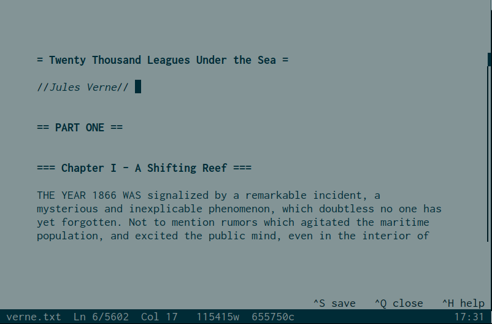
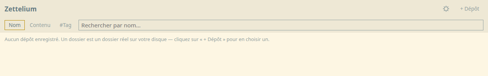

WrithDeck
Éditeur de texte sans distraction pour writerdecks (prototypes maison ou ordinateurs dédiés à l'écriture), en GUI comme en TUI, depuis un seul fichier exécutable sans installation. Coloration Markdown/txt2tags, mode commande modal, statistiques d'écriture, minuteur et chronomètre, thèmes clair/sombre. Décliné aussi en versions Android, ASM, C, DOS, ESP32, Lua et web.

github.com/luginf/writhdeck - binaires sur itch.io
Zettelium
Application de prise de notes façon Zettelkasten en syntaxe txt2tags, sous
forme d'un unique fichier HTML autonome (aucun serveur, aucune installation).
Liens [[cible|id]] avec panneau de backlinks, coloration et prévisualisation
en direct, recherche par tag, plusieurs dépôts locaux via l'API File System
Access. Construit selon les mêmes principes que WrithDeck, avec lequel il
partage les mêmes fichiers texte.

Essayer en ligne - github.com/luginf/zettelium-web
Plugins KOReader
Plugins maison pour la liseuse KOReader, dont
txt2tagsreader (lecture native des fichiers .t2t) et bookstats
(statistiques de lecture, nombre de mots).